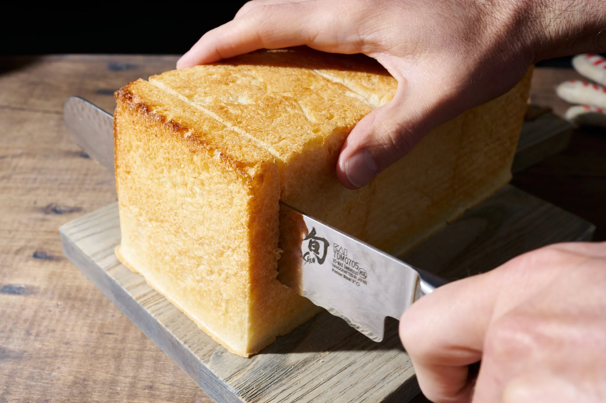
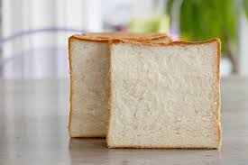

Japanese milk bread


Yeeey, so much bread
This bread is originally called Shokupan or Hokkaido milk bread, quite interesting isn't it?
Shokupan translated as "eating bread", "food bread" and it was widely introtuced after WW2
but let's not remember bad things and begin talk about cooking
Firstly
For making Shokupan we need:
- Bread flour - 265g
- Milk - 80ml
- Honey - 20g
- Instant yeast - 2.5g
- Sugar - 15gr
- Salt - 2.5gr
- Whipping cream - 30ml
- Unsalted butter - 15g
- Pan - 2x with size 1:1
You may watch cooking process there:
- Firstly we should make YUDANE DOUGH to do it we should:
- Mix 25g of flour with HOT milk
- Forget about mixture for an hour
- We also should mix LUKEWARM milk with honey and instant yeast
- Now, we are ready to make dough:
- We have to mix 240g of bread flour, 15g of sugar and 2.5g of salt
- Then, we need to add prepared YUDANE DOUGH into flour by adding with dividing YUDANE DOUGH
- After that we should add milk with yeast into our future bread, then carefuly stir it and add 15g of butter and mix it again
- Received mass should be leaved for the rest about 60 minutes or until it doubled
- We should divide the dough into 2 equal pieces and prepare them to be cooked for leave them for 15 minutes
- Before put doughts into the oven we should grease the inner pan with butter
- Last prepare for the dough before it goes baking, we need to roll each pieces for the straights rolls and put them in pans
- After giving one more rest(60 minutes) to the doughts and put pans into the lower middle of the preheated oven and bake at 190C for 30-35 minutes
Conglaturation!!!
We did it. And now we can taste this delicious product. Goot job!